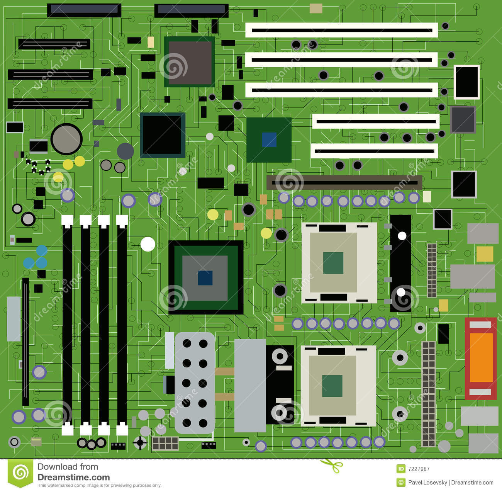

Los sistemas computacionales, generalmente implementados como dispositivos electrónicos, permiten el procesamiento automático de la información. Conforme a ello, los sistemas informáticos deben realizar las siguientes tres tareas básicas:
Entrada: captación de la información. Normalmente son datos y órdenes ingresados por los usuarios a través de cualquier dispositivo de entrada conectado a la computadora.
Proceso: tratamiento de la información. Se realiza a través de programas y aplicaciones diseñadas por programadores que indican de forma secuencial cómo resolver un requerimiento.
Salida: transmisión de resultados. A través de los dispositivos de salida los usuarios pueden visualizar los resultados que surgen del procesamiento de los datos.
Sistema operativo es un conjunto de programas que permite interactuar al usuario con la computadora.
Sistemas de mando y control, son sistemas basados en la mecánica y motricidad de dispositivos que permiten al usuario localizar, dentro de la logística, los elementos que se demandan. Están basados en la electricidad, o sea, no en el control del flujo del electrón, sino en la continuidad o discontinuidad de una corriente eléctrica, si es alterna o continua o si es inducida, contrainducida, en fase o desfase (ver periférico de entrada).
Sistemas de archivo, son sistemas que permiten el almacenamiento a largo plazo de información que no se demandará por un largo periodo de tiempo. Estos sistemas usan los conceptos de biblioteca para localizar la información demandada.
Código ASCII, Es un método para la correspondencia de cadenas de bits permitiendo de esta forma la comunicación entre dispositivos digitales así como su proceso y almacenamiento, en la actualidad todos los sistemas informáticos utilizan el código ASCII para representar textos, gráficos, audio e infinidad de información para el control y manipulación de dispositivos digitales.
En un editor de texto presionando las teclas ALT+ el numero del código ASCII aparecerá el caracter corespondiente, solamente funciona en teclado que tenga las teclas numéricas.
Los virus informáticos son programas que se introducen en una computadora, sin conocimiento del usuario, para ejecutar en él acciones no deseadas. Estas acciones son:
Unirse a un programa.
Mostrar mensajes o imágenes, generalmente molestas.
Ralentizar o bloquear la computadora.
Destruir la información almacenada.
Reducir el espacio en el disco.
Robo de datos : contraseñas, usuarios, y otros tipos de datos personales.

Los tipos de virus informáticos que existen son:
Gusanos: recogiendo información, contraseñas, para enviarla a otro.
Bombas lógicas o de tiempo: que se activan cuando sucede algo especial, como puede ser una fecha.
Troyanos: hace que las computadoras vayan más lentos.
Virus falsos: información falsa.